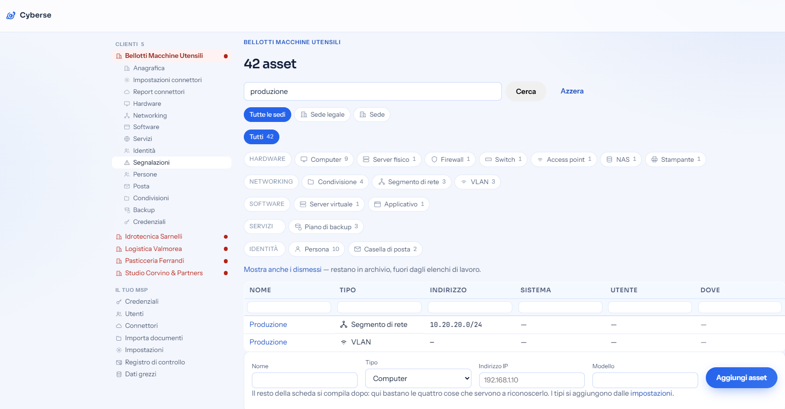
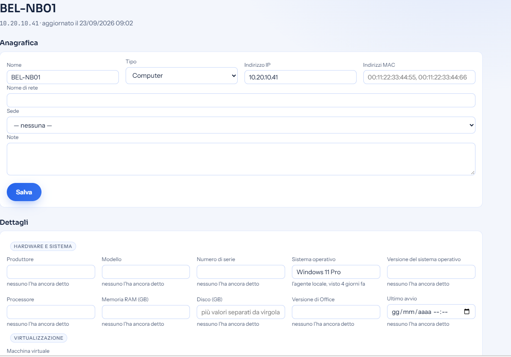
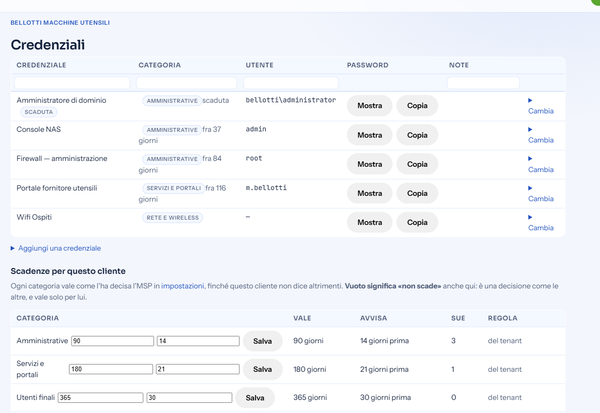
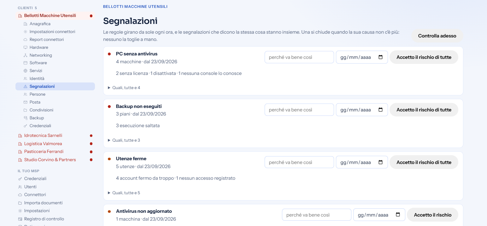
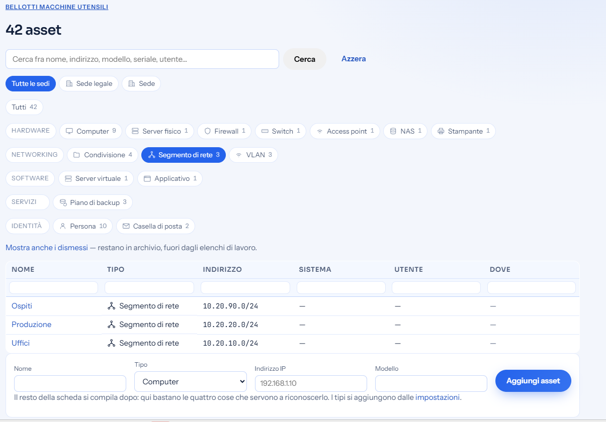

Documentazione di rete
Cyberse
La documentazione della vostra rete smette di essere un file e diventa un archivio vivo, che si aggiorna da solo.
Lo usiamo ogni giorno sulle reti dei nostri clienti.
Il punto di partenza
Il documento di rete, oggi
Ogni sede ha il suo documento: apparati, indirizzi, VLAN, backup, credenziali. Il modello è collaudato e il contenuto è buono. Il problema non è che cosa c'è scritto: è che il file resta fermo mentre la rete cambia.
Vive dentro un file
Uno per sede. Per sapere che cosa contiene bisogna aprirlo, e per confrontarne due bisogna aprirli tutti e due.
Lo aggiorna una persona
Quando ha tempo, e quando si ricorda. Fra una revisione e l'altra la rete è già cambiata, e il file non lo sa.
Si porta dietro i segreti
Le password stanno lì dentro, in chiaro, dentro una cartella sincronizzata su più computer.
Il formato
Cinque cose che un file non sa fare
Nessuna si risolve scrivendo meglio il documento. Sono limiti del contenitore.
Tiene i segreti in chiaro
Chi apre il file legge tutte le password, e nessuno sa che le ha lette.
Non si può interrogare
«Dove sono i NAS di quel modello?» vuol dire aprire i file uno per uno.
Non ha storia
Il numero di revisione lo scrive una persona, quando si ricorda.
Non dice quanto è fresco
Un dato vecchio di tre anni ha lo stesso aspetto di uno di ieri.
Si sdoppia da solo
Due persone che scrivono da due computer producono due copie diverse.
La proposta
Cyberse, in una frase
Un archivio unico della vostra rete, che si aggiorna leggendo gli apparati e le console che già avete, e che vi dice che cosa non va prima che ve ne accorgiate voi.
Uno solo
Apparati, persone, backup, segmenti e credenziali nello stesso posto, cercabili in un campo.
Sempre datato
Ogni dato dice da dove viene e quando è stato visto l'ultima volta. Il vecchio si riconosce.
Segreti separati
Cassaforte cifrata, aperta dietro un secondo fattore. Ogni lettura resta scritta, e ogni cliente è isolato dagli altri.
Si fa una domanda e si ha una risposta
«Su quali sedi c'è un NAS di quel modello?» In un archivio è una ricerca. In una cartella di documenti è un pomeriggio, e alla fine non si è sicuri di averli aperti tutti.
Apparati, persone, reti, backup e licenze stanno nello stesso posto, e ogni elenco si filtra e si ordina dalle intestazioni.


Ogni dato dice da dove viene e quando
Un documento non sa dire la sua età: uno fermo da tre anni sembra identico a uno di ieri. In Cyberse sotto ogni campo c'è scritto chi l'ha detto e quando l'ha visto.
E dove non sa, lo dice. «Nessuno l'ha ancora detto» è un'informazione: distingue il dato che manca da quello che nessuno ha mai rilevato.


Come resta aggiornato
Da dove arrivano i dati
Le fonti che già avete
- Un agente di rete sulle vostre sedi
- Active Directory: persone e computer
- Microsoft 365: persone, caselle, licenze e domini
- Acronis: i piani di backup
- WatchGuard: firewall e antivirus
- HPE Instant On e OPNsense: la rete
Cyberse
Confronta, unisce e data ogni informazione. Se due fonti si contraddicono, lo dice invece di scegliere in silenzio.
Che cosa vedete
- La scheda del cliente: sedi, apparati, persone, backup e reti, sempre alla data di oggi.
- Il documento, quando serve: torna come stampa datata, che si rigenera. Nessuno lo modifica più.
Le fonti che non ci sono ancora
Se una console non c'è, si aggiunge
L'elenco non è chiuso: è fatto per crescere. Un fornitore nuovo entra in uno dei tre modi già affrontati, e da quel momento i suoi dati stanno nelle stesse schede, con la stessa provenienza e le stesse segnalazioni.
Con una credenziale nostra
La console ci riconosce come gestori e ci apre solo la parte vostra. È il caso di Acronis e WatchGuard.
Con una credenziale vostra
La rilasciate voi, vale solo per voi e resta sulla vostra scheda. È il caso di HPE Instant On.
Con un vostro consenso
Nessuna password da consegnare: autorizzate la nostra applicazione, e la revocate quando volete. È il caso di Microsoft 365.
Quello che eredita il giorno stesso
Data e provenienza, riconoscimento degli apparati, legami, disaccordi fra fonti e segnalazioni. Una fonte nuova non li rifà: li trova già fatti.
Quello che serve da voi
Che il fornitore esponga un'interfaccia, e il vostro via libera. Da lì in poi si legge soltanto: verso le vostre console non scriviamo mai.
La garanzia
Che cosa l'agente non fa
Un programma che entra nella vostra rete deve dire con chiarezza dove si ferma. Cyberse legge e basta: non è uno strumento di telecontrollo, e non lo diventa con un aggiornamento.
Un agente per sede, non uno su ogni computer. Si installa una volta, lavora e si spegne.
- Nessun comando eseguito sui vostri computer
- Nessuno script, nessuna console remota, nessuna modifica
- Privilegi minimi: legge solo ciò che serve a documentare
- Ogni console si collega solo dopo un vostro consenso esplicito
- Anche le letture sono registrate, non solo le modifiche
I segreti
Le password fuori dai documenti
Nel documento resta il riferimento, non il segreto. La password vive cifrata in una cassaforte separata, legata alla scheda a cui appartiene.
- Si legge una alla volta, non aprendo un file intero
- Ogni lettura lascia traccia: chi, quando, quale
- «Mostra» e «Copia» sono due azioni diverse, e due permessi diversi: si può incollare una password senza che compaia mai sullo schermo
- Chiavi Wi-Fi e chiavi di licenza seguono la stessa strada
- Chi non ha il permesso non vede nemmeno che esistono


La piattaforma
Dove finiscono i vostri dati
Un archivio che raccoglie la rete di più aziende deve difendersi meglio di quello che documenta.
Ogni cliente isolato
La separazione la impone il database stesso, non il programma che ci scrive sopra.
Segreti cifrati
Cifratura autenticata, e mai una copia in chiaro nei dati raccolti dalle fonti.
Secondo fattore
Obbligatorio, e le credenziali stanno dietro di esso: la password da sola non apre niente.
Tracciate le letture
Chi ha aperto quale password, e quando. Non soltanto chi ha modificato qualcosa.
Solo canale cifrato
Il portale risponde unicamente in HTTPS, e solo al proprio nome.
Nessuna terza parte
Caratteri e risorse ospitati in proprio: il vostro indirizzo IP non esce verso nessuno.
Il vantaggio decisivo
Che cosa non va, senza cercarlo
Un archivio che descrive e basta serve a poco. Cyberse rilegge tutto a ogni giro e apre una segnalazione dove trova un problema, raggruppata per sede e per motivo. Un file non lo farà mai: non confronta niente con niente.
Un computer senza antivirus
Acceso, in rete, e nessuna console lo protegge.
CriticaUn computer che nessuno conosce
Vivo sulla rete, ma assente da ogni console.
CriticaUn backup senza esito
Il piano esiste, ma non è andato a buon fine.
CriticaUn antivirus non aggiornato
Firme o motore fermi da troppo tempo.
AttenzioneUn'utenza rimasta aperta
La persona è uscita, la sua utenza no.
AttenzioneUna credenziale scaduta
Ha superato la durata che le è stata data.
Attenzione
Il contenuto
Che cosa c'è in una scheda
Apparati
Server, computer, switch, stampanti, NAS, telecamere.
Persone
Utenze, gruppi e chi appartiene a che cosa.
Reti
Segmenti, VLAN, linee e reti Wi-Fi.
Backup
Piani, macchine protette e ultima riuscita.
Cartelle
Le condivisioni di rete e dove stanno.
Licenze
Con la chiave al sicuro e la scadenza.
Porte
Che cosa ogni apparato espone in rete.
Legami
Che cosa è collegato a che cosa, e come.
Sedi
Indirizzi, contatti e riferimenti dei fornitori.
Storia
Da quando è in servizio, quando è stato dismesso, chi l'ha visto per ultimo.
La rete la disegna chi la percorre
Segmenti, VLAN e apparati non li scrive più una persona a mano: li porta dentro chi la rete la percorre davvero, cioè l'agente in sola lettura e i firewall.
E un segmento è una scheda come le altre, con la sua subnet: si apre, si cerca, e si sa che cosa ci sta dentro.


In sintesi
Lo stesso lavoro, nei due modi
| Che cosa cambia | Con i file sciolti | Con Cyberse |
|---|---|---|
| Dove sta il dato | Un documento per sede | Un archivio per tutte |
| Chi lo aggiorna | Una persona, a mano | Gli apparati e le console, da soli |
| Le password | In chiaro, dentro il file | Cifrate a parte, una alla volta |
| Chi può vedere cosa | Chi apre il file, vede tutto | Ruoli, e un secondo fattore |
| Trovare una cosa | Aprire i file a uno a uno | Una ricerca su tutto |
| Quanto è fresco | Non si sa | Ogni voce porta la sua data |
| Chi l'ha letto | Nessuna traccia | Registrato, lettura per lettura |
| I problemi | Li scoprite dopo | Ve li dice prima |
Il passo successivo
Il documento torna solo come stampa
Quando serve consegnare qualcosa a qualcuno — un audit, un fornitore, un cambio di macchina — il documento si rigenera alla data di oggi, con lo schema della rete disegnato dai dati e senza password dentro. Nessuno lo modifica più a mano.
Come si parte
- Il vostro documento entra così com'è
Niente da ricompilare: quello che c'è scritto diventa schede, e le password vanno nella cassaforte.
- Un agente per sede, in sola lettura
Su una macchina Windows qualunque. Si installa in pochi minuti.
- Le console si collegano col vostro consenso
Una alla volta, quando volete voi. Da lì l'archivio si tiene da solo.
Cyberse
Parliamo della vostra rete.
Per i nostri clienti Cyberse fa parte dell'assistenza. Se gestite reti per conto di altri, si parte da una prova su un vostro cliente vero, con condizioni da definire insieme.
Le schermate vengono dall'ambiente dimostrativo di Cyberse: aziende e dati inventati. La rete di un cliente vero non finisce su un sito.